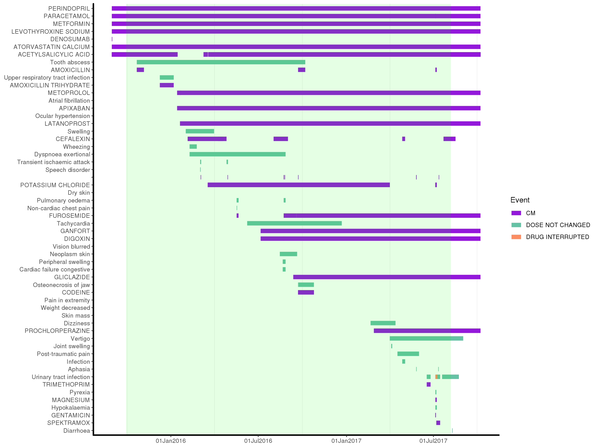
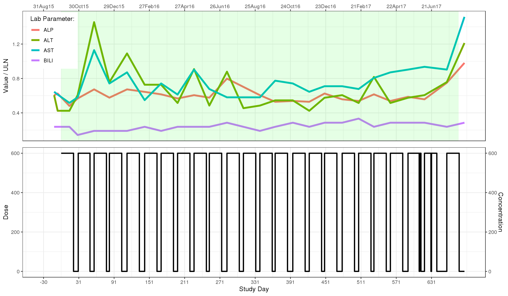
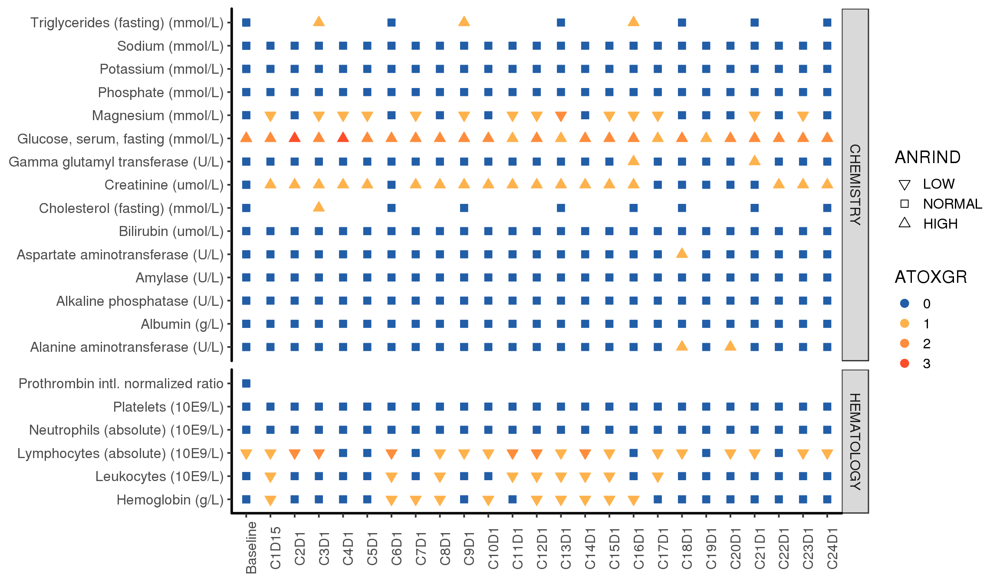
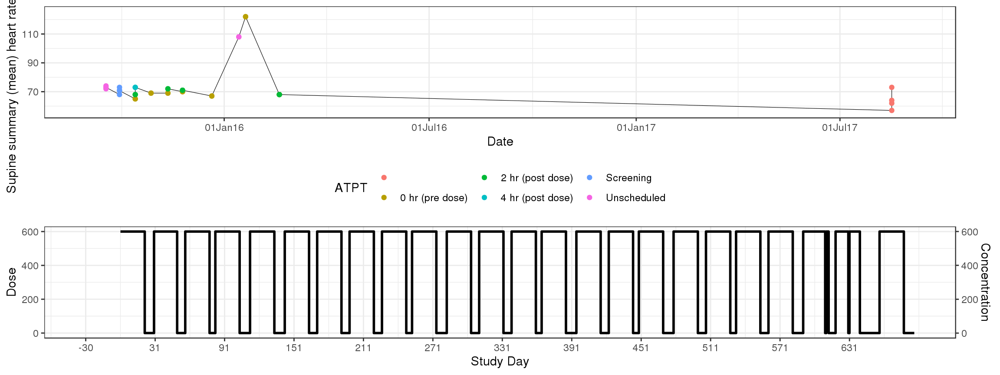

pprofile.RmdThe patient profile only requires subject level data (ADSL). But new visualization (submodules) become accessible when additional datasets are loaded.
Here is a description of the UI and the currently available submodules, along with their data requirements.
The landing page of the patient profile contains the patient selector, a quick summary of the demographics & treatment information for the subject and a tabular overview of the available data.
If adverse events (ADAE) and concomitatn medications (ADCM) are available, the AE + CM visualization is enabled. The plot displays the time ordered concomitant medications, administration dates and duration, along with Adverse Event information and duration also ordered by time.

Concomitant medications are drawn in purple. AEs can be colored by severity, grade, or action taken using the dropdown menu:
The treatment period is highlighted with a green background.
This plot is particularly useful to investigate whether an observed AE is due to the drug under study or due to other medication.
When Lab values (ADLB), Exposure (ADEX) and PK data (ADPC) are available, the “Exposure + Labs” tab is enabled. It provide the key liver toxicity markers and dose administration record and calculated exposure information. The lab values are normalized to the upper limits of normality such that they may all be displayed on the same graph. The lower graph shows each dosing of the active compound and key PK exposure information.

If Lab values are given (ADLB), the module displays an overview of the parameters that were collected for the participant and will highlight values that are above or below the normal range.

The lab overview can be used to quickly scan all available lab data for anomalies. Once a parameter or timepoint of interest has been identified, it can be further investigated using the Lab Parameters tab.
Always loaded along the Lab Visits, the Lab Parameters plot shows lab values over time for the selected parameters. Upper Normal Limit (UNL) and Lower Normal Limit (LNL) are displayed in red dashed lines.
Parameters can be added or removed using a dropdown.
If Electrocardiogram data (ADEG), Exposure (ADEX) and PK (ADPC) are passed, the Exposure & ECG tab will display the relationship among expose, ECG and dosing information.

The ECG parameters to display are selected from a subject specific dropdown of all available parameters.
If you like what you see and would like to build an app for your data that includes the patient profile or add the module to an existing app, follow the documentation in patprofile for developers tab.
You can also contact the SCC for information about the module or collaboration for app development.